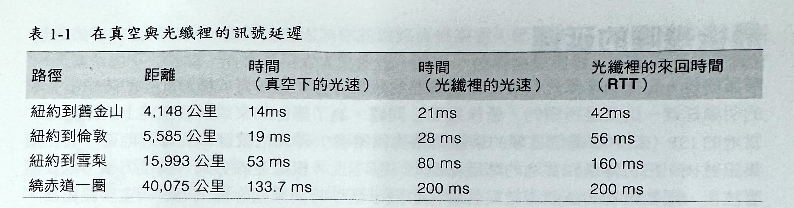
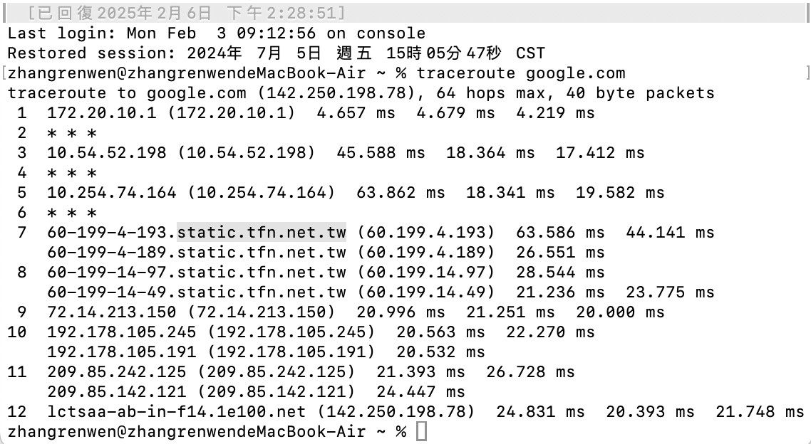
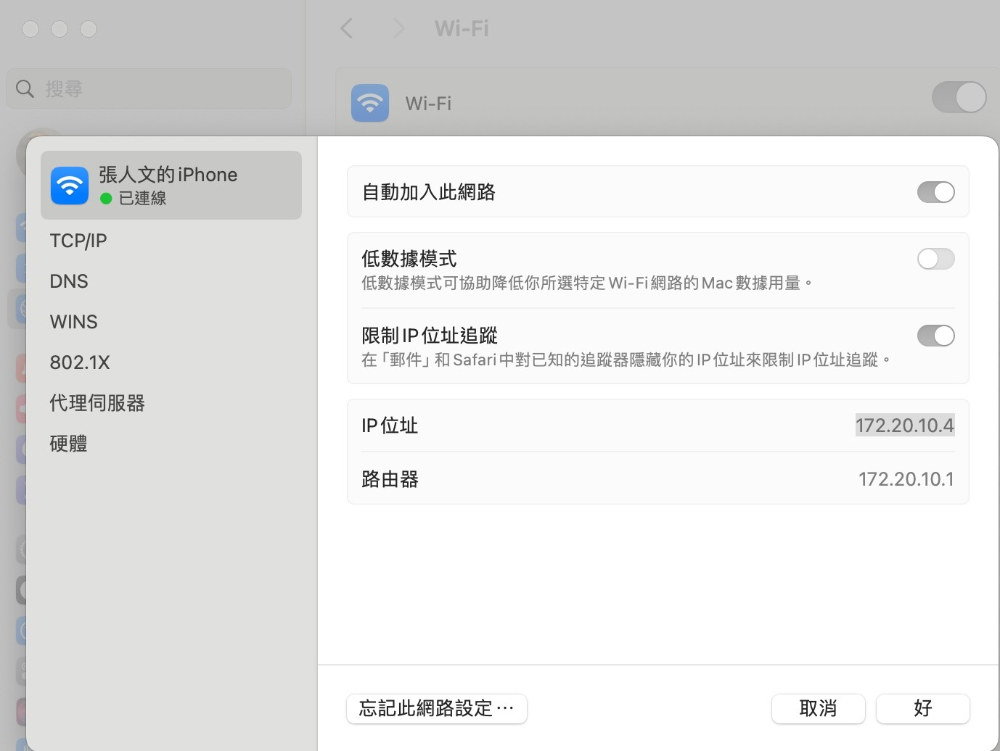
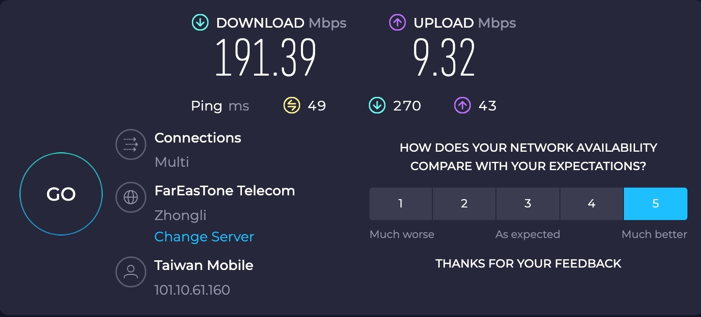

1-18-2 網路通訊基礎-「延遲」「頻寬」
- 延遲（Latency） ：從來源送出封包，到目的地收到為止的時間。
- 延頻寬（Bandidth）：邏輯或實體通訊路徑裡的最大傳輸量。

為了能夠更了解延遲與頻寬間的關係，我們將透過一些方法來讓讀者能更清楚知道，在它們之上的 TCP、UDP，和所有應用程式通訊協定（protocols）的內部情況與運作特性。
以 Hibernia Express 光纖降低跨大西洋網路傳輸的延遲情況
「延遲時間」在金融市場裡的許多頻繁交易當中來說，是一項葷要標準，因為光是幾毫秒的差異，就可能會決定幾百萬美元的盈虧結果。 在2011年初，中國華為（Huawei）和 Hibernia Atlantic 公司開始鋪設長達3000英里，以橫跨大西洋來連接倫敦和紐約兩大城市的光纖纜線（也就是「HiberniaExpress」），而主要目的就只是為了與其他現有橫跨大西洋纜線相較之下，可因為縮短城市間的距離，所能縮短的那5毫秒延時間。 一旦建造完成，這條電纜將專屬於金融機構使用，而它的造價將超過4億美元一也就是說，省下的每毫秒至少價值8千萬美元！這真是名符其實的「時間就是金錢」呀！
造成延遲的各種因素
「延遲」（latency）是指一個訊息或封包，從起點開始出發，到達目的地所花費的時間。 這雖然只是個簡單的定義，但在這一小段文字裡頭，卻隱藏了許多的資訊一也就是說： 每個系統所含有的許多來源或元素，都會在訊息傳遞過程所花費的整個時間上有所貢獻，因此我們就有必要去瞭解這些元素是哪些，以及會左右它們的運作效能的因素。
讓我們進一步地來看一下，網際網路上用來負責在客戶端（client）與伺服器（server）之間，傳遞訊息的典型路由器（router）所會貢獻出來的常見元素：
-
傳播延遲（Propagarion delay）
這是訊息從發送端到接收端之間所需要的時間，也就是距離除以訊號傳播速度所得出的結果。
-
傳送延遲（Transmission delay）
將封包的所有位元送上網路所需要的時間，而這是封包的長度和網路線的資料傳輸率（data rate）有關。
-
處理延遲（Processing delay）
這是處理封包表頭（header）、檢查位元錯誤，並判斷封包目的地所需要的時間。
-
佇列延遲（Queuin delay）
收到的封包在佇列當中等候，直到被確實處理為止所經過的等候時間。
客戶端與伺服器端之間的總延選時間，也就是上述所有延遲時間的總和。「傳播時間」是由距離和訊號傳輸媒介所造成一如我們所見，傳播速度通常是在光速的一個很小的常數範圍裡。而另一方面，傳送延遲是由傳送網路線的可用資料傳輸率所造成，而這與客戶端和伺服器間的距離無關！舉個例來說：假設我們想要分別透過1 Mbps 和100 Mbps這兩種網路線，來傳送一個10Mb 大小的檔案。那麼，要把整個檔案放到1 Mbps 的網路線上，得花上10秒鐘，而放到100Mbps 的網路線上，就只要花費0.1秒。
接著，當封包到達路由器時，路由器就得審視該封包的表頭，以決定對外的傳輸路徑，並且可能會對資料進行一些查核處理一這當然也會花上一點時間。雖然大部分的這類邏輯現在都是由硬體來處理，因此延渥時間相當小，但它畢竟還是存在。最後，如果封包以高於路由器處理能力的傳輸率送達的話，那封包就會被暫時放置到接收緩衝區裡頭。 而資料被佇列在緩衝區裡頭所耗費的時間，顯然就是所謂的佇列延遲。
每個透過網路傳輸的封包都會具有這類延遲因素。起點與目的地之間的距離越遠，傳播延遲就越大。而沿路過程所遭遇的中繼路由器越多，每個封包的處理和傳送延遲就越高。最後，傳輸路徑上的流量負載越高的話，封包在接收緩衝區裡頭的延遲時間也就會相對增加。
區域路由器裡的「緩衝區膨脹」情況
「緩衝區膨脹」（bufferbloat）一詞是 Jim Gettys 在2010年所創，而這是佇列延遲之所以會影響網路的整體效能的最佳例證。
根本的問題是在於，許多路由器現在都會以遺漏封包應該要被刻意忽略掉為前提的情況，來搭配龐大接收緩衝區去進行資料遞送處理。然而，這不但破壞了TCP的避免壅塞機制（下一章將會談到），同時也會為整個網路帶來大量且不確定的延遲情況。
幸好，新的 CoDel 動態佇列管理演算法已經被提出要來處理這樣的問題，而且已經被實作在 Linux 3.5+的核心當中。更多相關資訊，請參考 ACM Queue 網站上的《Controlling Queue Delay（控制佇列延遲）》一文 （http://gueve.acm.org/detail.cfm?id=2209336）
光速與傳輸延遲
根據愛因斯坦在他的狹義相對論裡頭提到一光速是任何能量、物質，與資訊可以行進的最快速度。這個發現對任何網路封包的傳輸延遲時間下了一個牢不可破的極限。
然而，雖然光速每秒高達 299,792.458公尺（或每秒186,282英里），但這是指光速在真空狀態裡的情況。換言之，我們的網路封包在銅線或光纖的傳播介質上進行傳送的時候（參考表1-1），速度將會減慢。光速與封包在物質中傳送速度間的比率，會因傳輸介質的折射率（refractive index）不同而有所差異。這個數值越大，表示光速在此介質上的移動速度就越慢。
針對長距離傳送封包的情況下，一般光纖的介質折射率大概會介於1.4到1.6之間一雖然慢，不過我們也都致力在改善傳播介質的質料，以便降低折射率。簡單來說：就經驗法則論之，光纖傳播速度每秒約為2億公尺，也就大概是在1.5以下的折射率。其意味著我們已經是在最快速度上擁有一個微小的固定係數了！這已是工程技術上的驚人成就了。
光速雖快，但無疑仍需花160毫秒來回（Round-Trip Time, RTT）於紐約與雪梨間。事實上，在表1-1 裡頭的數據，是假設封包透過光纖在兩城市間，以最佳路徑（兩點間最短距離）的情況下進行傳輸的結果。然而，並不是真的有這樣的電纜可使用，也就是說封包在紐約與雪梨間的傳輸，實際上會花費更長的時間。沿著這個路徑的每個節點都會再增加額外的繞徑、處理、佇列以及傳輸延遲。最後，在目前現有的網路上，紐約與雪梨間的實際 RTT（來回時間）大概會耗費約200~300毫秒。所有的狀況幾乎都考慮到了，這數據看起來似乎還蠻快的，對吧？
我們並不習慣在日常生活上以毫秒來當作測量單位，不過根據研究結果，一旦系統裡頭出現 100~200毫秒的延遲，我們絕大多數都確實會感覺到所謂的「延誤」（lag）。一旦延遲時間超過300毫秒，在互動上通常就會被當作是「運鈍」（sluggish）了，而在碰到 1000毫秒（1秒）的阻塞情況下，很多使用者都會在等候回應的時候，開始轉到另一個更迫切的事務上了。
這結論很簡單：為了提供最好的體驗，並且讓客戶持續專注在當下的工作任務上，我們得讓我們應用程式在千分之幾毫秒內，就做出回應。尤其是在網路傳輸上，我們並沒有太多機會可以有任何閃失。為了能夠成功，網路的延問題必須很小心的處理，而且是開發的每個階段上的一項明確的設計標準。
CDN（Content delivery network，內容傳遞網路）服務提供了許多優點，但其中的主要任務，是把內容散佈到世界各地，並從最接近客戶端的位置來提供內容，而這樣將使得我們能夠大幅降低所有資料封包的傳輸延遲時間。 雖然我們無法加快封包傳輸速度，但是卻可以策略性地將伺服器佈局到更接近使用者的地方，來縮短距離！透過CDN來傳送你的資料，即可具備明顯的效能優勢。
最後幾哩的延遲
嘲諷的是，延遲通常都是發生在最後幾哩的距離，而非在跨海或橫跨大陸的時候所造成的明顯延遲一這就是所謂的「最後幾哩」問題。為了讓你的家或辦公室連上網際網路，當地的ISP（如中華電信這類的網際網路提供業者）得先把纜線牽到鄰近地區，並在匯集訊號後，把它傳送到當地的鄰近節點上。基本上，根據連線方式、繞徑方法，以及部署技術，這些最初的幾個連結點就會花了幾十毫秒時間來把你連上ISP的主要路由器。
根據美國聯邦通訊委員會在2013年初所公布的「美洲地區之寬頻測量」報告表示： 「光纖到家的部分，在尖峰時間的最佳表現，平均大概有18毫秒的延遲，而纜線會有26毫秒的延遲，DSL 則會有44毫秒的延遲。」 —2013年二月，美國聯邦通訊委員會
這18~44 毫秒的延遲，是在封包傳到目的地之前，就存在於ISP的核心網路內部最接近的測量點當中。雖然美國聯邦通訊委員會之報告僅只於美國本土，但最後幾哩的延遲，確實是所有網際網路提供業者除了地理空間以外的最大挑戰。為滿足一下大家的好奇心，只要用個簡單 traceroute 指令，即可得知你的網際網路提供業者的網路配置和執行效能狀況。
 而這當中表示從連上手機無線網路的 MacBook Air 出發到目的地之間，就經過了12個節點。
最後幾哩的延遲時間，很可能會因為你的網路提供業者、部署技巧、網路佈局，甚至是一天當中的不同時間，而有著相當大的變化。身為一位終端使用者，假如你正在想提升你的網頁瀏覽速度的話，要降低延遲時間的基本原則，就是慎選你當地的ISP公司。
延遲（而非頻寬）通常是大多數網站的效能瓶頸。若要瞭解其中原因，我們就得先瞭解一下 TCP 和 HTTP 協定的處理機制一而這在以下各章裡頭將會談到。
以繞徑追蹤工具來測量延遲時間
追蹤繞徑（traceroute）是個簡單的網路診斷工具，而它可以被用來查看封包的傳瀝路徑，以及在IP 網路上的每個網路節點的延遲時間。若要找出個別節點，追蹤繞徑工具會搭配一個遞增的節點限制數（1、2、3，以此類推），來將一連串的封包發至目的地。在達到節點限制數的時候，中繼節點就會傳回 ICMP 時間超過（Time Exceeded）訊息，以便讓工具可以測量出每個網路節點的延遲時間。
在 Unix 平台上，你可以在命令列當中輸入 traceroute，而在 Windows 系統上則是輸入 tracert。
核心網路的頻寬
細如髮絲的光纖，就是被設計用來對纜線的兩個終端點之間進行光線傳輸的單純「光線輸送管」。金屬線路雖然也有被用到，但是它會有訊號容易流失、電磁干援，以及維護成本高等問題。你的封包將會在這兩種纜線當中進行傳送，而針對長距離的節點，通常都是經由光纖來進行傳輸。
光纖在頻寬方面有著相當大的優勢，因為它可以透過所謂的WDM（wavelength-divisionmultiplexing，波長分波多工處理）的程序，來攜帶各種波長的訊號（頻道）。因此，光纖的總頻寬就是每個頻道資料速率乘以多工頻道數量所得出的結果。
在2010年初，研究者已找到超過400種，而讓每個頻道可擁有171 Gbit/s最高容量的波長，而這表示，每單一光纖就可傳遞出70 Tbit/s 的總頻寬量。換句話說，我們得拿上千萬的銅導線才能達到這樣的總吞吐量！這也是為何各大陸間的跨海資料傳輸作業這類的長距離節點，都是透過光纖來傳遞。每條電纜都帶有好幾條的光纖（通常是4條），因此，每條電纜每秒就能傳輸數百 Tb 的頻寬量。
網路邊緣的頻寬
構成網際網路核心資料路徑的骨幹網路，或所謂的光纖連結，代表的是每秒有數百兆位元（terabit）的資料傳輸能力。然而，在網路邊緣的資料傳輸能力就非常小，而且很多都會因為部署技術的關係而有相當大的差異一這其中包括有撥接、DSL、電纜、無線主機連接、PTTH（光纖到府），以及區域路由器。使用者的可用頻寬，會與客戶端與目標伺服器之間的最低連結能力有關，如圖1所示。
為方便對照，我們以處理一部HD影片的串流處理為例一根據其解析度和編碼方式來看，需要用到 2~10Mbps 的頻寬。因此，一般使用者在身處網路邊緣地區時，可以觀看較低解析度的影片，只是會消耗較多的網路負載量一然而這情況對於多口之家來說，是很難滿足的。
| 影片解析度 | 建議連線速度 |
|---|---|
| 4K 60Hz | 15Mbps |
| 1080p HD高畫質 | 6Mbps |
| 720p HD高畫質 | 2.5Mbps |
| 480p SD標準畫質 | 1.1 Mbps |
| 360p SD標準畫質 | 0.7 Mbps |
Cable.co.uk 發佈 Worldwide broadband speed league 2023 調查，涵蓋 220 個國家與地區進行約 13 億次速度測試，調查時間為 2023 年 6 月 30 日之前的 12 個月。調查指出，全球平均網速從 2022 年的 35.98 Mbps 進步到 46.79 Mbps 顯示全球網速持續快速上升，2017 年時全球平均下載速度只有 7.41 Mbps。
2023 全球寬頻上網速度最快前 10 名：
- 澤西島（264.52 Mbps）
- 列支敦士登（246.76 Mbps）
- 澳門（231.40 Mbps）
- 冰島（229.35 Mbps）
- 直布羅陀（206.27 Mbps）
- 安道爾（190.40 Mbps）
- 盧森堡（162.21 Mbps）
- 臺灣（153.51 Mbps）
- 法國（152.45 Mbps）
- 荷蘭（142.49 Mbps）
百萬人口以上國家 臺灣網速蟬連冠軍 Worldwide broadband speed league 2023 調查指出，網速最快前 5 名都是人口少、土地面積小的國家與地區，因為要架設覆蓋全境、全人口的光纖與 5G 網路都更加容易。
弄清楚頻寬的瓶頸發生來源，對於每個已知使用者來說，通常是個不明顯，卻很重要的練習。同樣地，對於好奇心強的人來說，有許多像 Ookla 公司所經管的 speedtest.net （如下圖）之類的各種線上服務，會提供可用來對某些當地伺服器，進行上傳與下載串流速度的測試服務一我們將會在討論到 TCP 主題的章節時，說明挑選當地伺服器的理由。使用這類服務來進行測試，將有助於你去檢驗一下自己實際的連線速度，是否如你選用的當地ISP公司所廣告的數據那樣，就會知道選擇好的ISP網路服務業者是重要的。
下圖為 2025/02/06 台灣大哥大 的 5G 網路速度：
在台灣五大電信業者中，目前以中華電信的 5G 速度最快。根據 Speedtest Intelligence 2023 報告顯示，中華電信的 5G 中位數下載速度為 361.83 Mbps，遠高於其他業者。
儘管，大家都期望對ISP 選用高頻寬的連結服務，但是卻沒有人能夠保證兩端之間絕對會有穩定的傳輸效能。網路有可能會在某些節點出現高需求、硬體錯誤、密集性的網路攻擊。或是其他原因的時候，於任何媒介當中發生擁塞狀況。吞吐量與延遲效能的高度愛動情況，是資料網路的一種天性一對不斷變動中的「網路天氣」去進行預估、管理，與調整等處理，確實是一項複雜又艱鉅的任務。
提供更高的頻寬與較低的延遲
對更高頻寬的需求情況與日俱增，而其中絕大部份是因為串流影片的日益普及之故一事實上，網際網路的流量幾乎有一半以上都是這些串流封包。所幸，儘管需要花點費用，不過卻有很多可以用來提升可用流量的方式：我們可以在光纖纜線裡頭增加更多的光纖線路、在擁塞的路徑上配置更多的線路，或者是改善WDM技術來讓現有的連結線路可以傳送更多的資料。
根據專門負責電訊市場研究與顧問業務的 TeleGeography 公司在估計，直到2011年為止，我們對於目前已設置的海底光纖網路，就只有使用到可用容量的20%而已。更重要的是，在2007年到2011年間，由於WDM的技術升級，整個跨太平洋電纜的資料傳輸容量又提高了一半以上！同樣的，在光纖網路上，也因為技術提昇，而讓兩端可以對資料進行多工處理。當然，我們不能期望這些提升效果會永無止盡地持續發生， 由於每一種介質都會到達某個效益臨界點。儘管如此，只要還有經濟效益需求，頻寬的總吞吐量就一定會持續提升一就算所有方法都失效，至少我們還可以增加更多的光纖啊！
至於延遲的改善方面，則又是另一回事了。光纖的品質有辦法讓我們的傳輸速度稍微更趨近於光速一我們可以採用具有較低折射率的材質，以及更快的路由器。然而，假設我們目前的傳輸速度是光速的1.5倍以內的話，改善光纖材質的策略最多也只能獲得30%的提升效果而已。而且根據物理定律：光速本身就已經是最小延遲的極限了。
由於無法提升光的傳輸速度，因此我們就改變方向，以縮短傳輸距離的策略來努力！而球面上兩點之間的最短距離，就是所謂的「大圓路徑」（great-circle path）。然而，新幾線的鋪設情況，很可能會受到實體地形、社會，與政治的影響，而且這當中的相關預算要從何而來？
總之，若要改善應用程式的執行效能，我們就得在清楚瞭解可用頻寬與光速的極限的情況下，去對我們的通訊協定和網路程式碼進行架構和最佳化處理：我們必須要減少往返次數、把資料搬移到距離客戶端更近的地方，並建立一套可以透過快取、預先取用，以及各種類似技術，來隱藏延情況的應用程序一而這些將會是後續篇章當中所會討論到的主題。